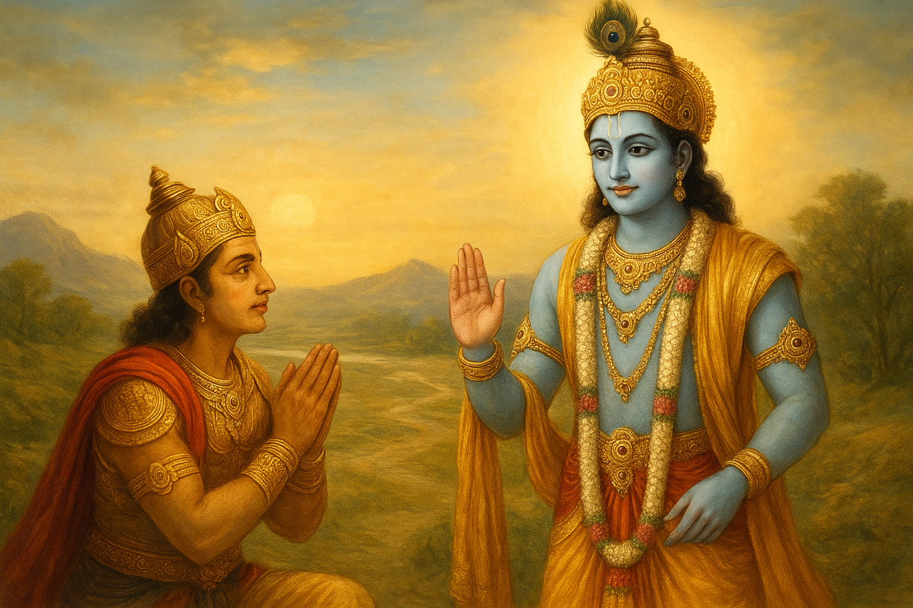
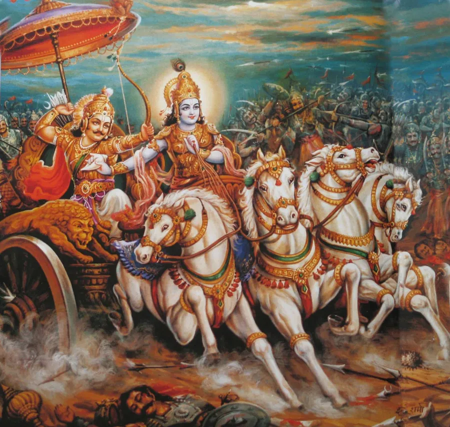
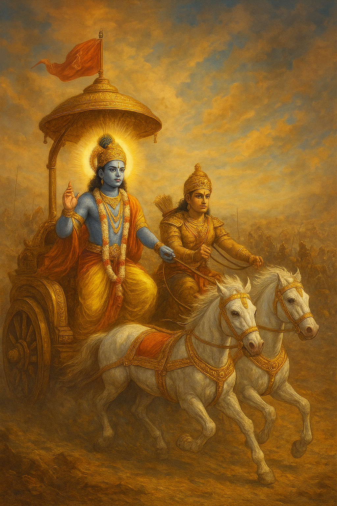
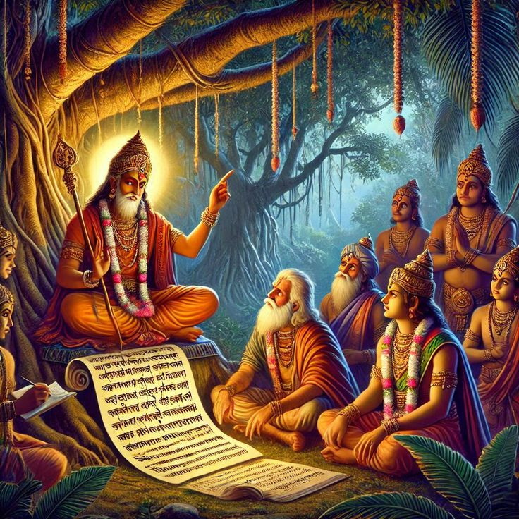
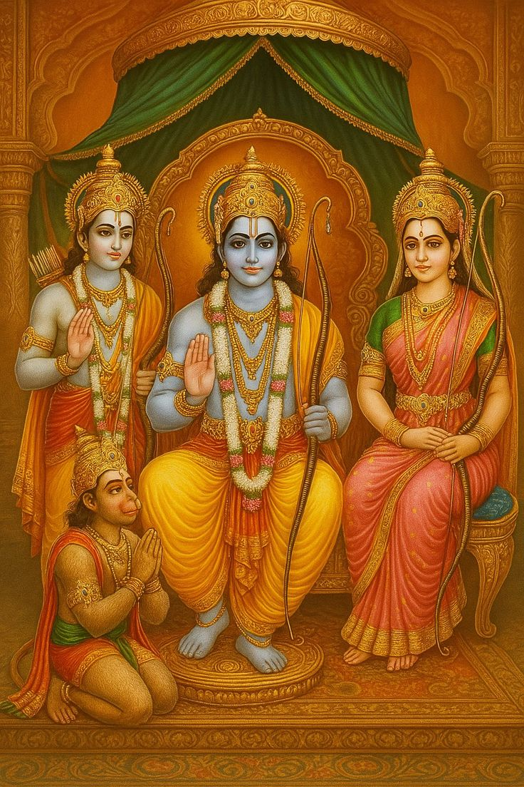
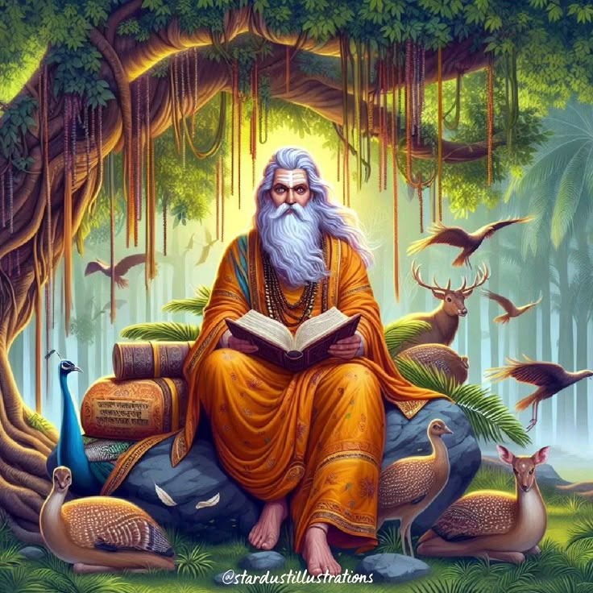

About the Bhagavad Gita

The Bhagavad Gita, a 700-verse Hindu scripture from the Mahabharata, is a profound dialogue between Lord Krishna and Prince Arjuna. Set on the battlefield of Kurukshetra, it addresses moral, ethical, and spiritual dilemmas, guiding humanity toward righteousness. The Gita explores concepts like Dharma (duty), Yoga (paths to liberation), and Moksha (spiritual freedom), offering timeless teachings for a balanced and purposeful life.
Teachings of the Bhagavad Gita

Core Principles
The Bhagavad Gita is a treasure trove of spiritual and philosophical wisdom, offering guidance on how to live a life of purpose and balance. Its teachings revolve around key principles that remain relevant across ages:
Dharma (Duty): The Gita emphasizes performing one's duty selflessly, without attachment to outcomes. Krishna advises Arjuna to act according to his Kshatriya duties, focusing on righteousness rather than personal gain.
Karma Yoga (Path of Action): This path teaches that one should perform actions with dedication and without ego, surrendering the results to the divine. It encourages selfless service and discipline in all endeavors.
Bhakti Yoga (Path of Devotion): The Gita advocates complete devotion to God, cultivating love and surrender to the divine will. This path leads to spiritual liberation through faith and devotion.
Jnana Yoga (Path of Knowledge): The pursuit of self-knowledge and understanding the eternal soul (Atman) is central to this path. It involves discernment between the transient and the eternal.
Dhyana Yoga (Path of Meditation): The Gita highlights the importance of meditation and self-discipline to achieve mental clarity and union with the divine.
These teachings guide individuals toward a balanced life, harmonizing action, devotion, knowledge, and meditation. The Gita also addresses universal themes such as detachment, equanimity, and the impermanence of the material world, encouraging readers to seek inner peace and spiritual growth.
Chapters of the Bhagavad Gita
Explore each chapter in detail by clicking.

Chapter 1: Arjuna's Dilemma
Arjuna's despair upon seeing his relatives and teachers in the opposing army, leading to his refusal to fight.

Chapter 2: Transcendental Knowledge
Krishna introduces the concepts of the immortal soul (Atman) and the duty to act without attachment (Karma Yoga).

Chapter 3: Path of Selfless Service
Focuses on performing one's prescribed duties (Dharma) selflessly, without attachment to the results.

Chapter 4: Path of Knowledge
Krishna reveals the divine origin of this wisdom and explains the path of action combined with true knowledge.

Chapter 5: Path of Renunciation
Explores action and renunciation, concluding that selfless action is superior and leads to true peace.

Chapter 6: Path of Meditation
Details the practice of meditation (Dhyana Yoga) to control the mind, senses, and achieve inner union.

Chapter 7: Self-Knowledge
Krishna explains knowledge of the Absolute, detailing His divine and material energies that pervade everything.

Chapter 8: Path of the Eternal God
Discusses how to remember the Lord at the time of death to attain the supreme, eternal abode.

Chapter 9: Sovereign Science
Reveals the most confidential knowledge of devotion, highlighting the supreme position of the Lord.

Chapter 10: Divine Glories
Krishna describes His infinite opulences and manifestations as the source of all existence.
Chapter 11: The Cosmic Form
Arjuna witnesses Krishna's universal, awe-inspiring form (Vishvarupa), beholding the entire universe within Him.

Chapter 12: Path of Devotion
Describes Bhakti Yoga, the path of loving devotion, as the most direct means to attain union with God.

Chapter 13: The Field and Knower
Differentiates between the physical body (the field) and the eternal soul (the knower of the field).

Chapter 14: The Three Gunas
Explains the three modes of material nature (goodness, passion, and ignorance) and their influence on the soul.

Chapter 15: The Ultimate Person
Describes the material world as an inverted banyan tree and explains how to achieve the supreme destination.
Chapter 16: Divine and Demonic
Outlines the qualities and behaviors associated with the divine and demonic natures in human beings.

Chapter 17: Three Kinds of Faith
Discusses the three divisions of faith, diet, sacrifice, and austerity based on the modes of nature.

Chapter 18: Liberation by Renunciation
Summarizes the Gita's teachings, concluding with the ultimate path of surrender to God for liberation.